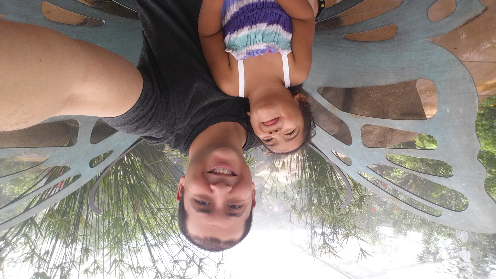

my site
This page provides a brief summary of the coding work I do.
This site will display projects done during my Masters of Data Analytics, Bachelors of Software Development, and personal projects. Some prospective projects that I have been considering developing are: visualization tool for NBA statistics, basic personal website, education sites, financial education site, and a personal site for my daughter and I.
Github Link - Exploratory Data Analysis page using medical dataset
Having trouble with Pages? Check out our documentation or contact support and we’ll help you sort it out.